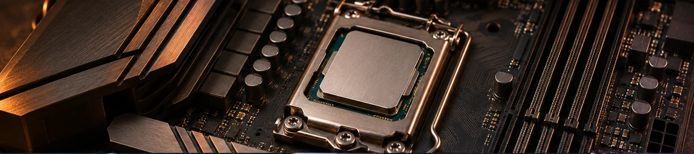

Black Friday 2026: So findest du einen passenden Gaming-PC-Deal
Du möchtest einen Gaming-PC günstiger kaufen, aber nicht stundenlang Rabattaktionen durchsuchen? Mit einem klaren Wunschzettel und zwei oder drei passenden Alternativen wird die Suche deutlich einfacher. Hier erfährst du, wo du Angebote findest und wann ein Kauf für dich sinnvoll ist.

Wann ist Black Friday 2026 – und wann lohnt sich die Suche?
Black Friday ist am 27. November 2026, Cyber Monday am 30. November. Händler können ihre Aktionen schon vorher starten. Es lohnt sich deshalb, gewünschte Modelle früh zu beobachten. Ein bestimmter Aktionstag garantiert dir allerdings keinen Bestpreis.
Wenn du deinen PC bald brauchst, lege lieber einen akzeptablen Gesamtpreis fest, statt auf den perfekten Moment zu warten. Ist ein passendes Angebot darunter und sind Ausstattung sowie Händler überzeugend, hast du eine nachvollziehbare Kaufentscheidung. Ohne Zeitdruck kannst du weiter vergleichen.
Beginne mit deinen Spielen und deinem Gesamtbudget
Schreibe zuerst drei Spiele auf, die du wirklich spielen möchtest. Notiere dazu die Auflösung deines Monitors und deinen Anspruch: Reicht dir ein flüssiges Einzelspieler-Abenteuer oder möchtest du in schnellen Mehrspieler-Titeln möglichst viele Bilder pro Sekunde?
Diese Angaben helfen mehr als die Suche nach dem größten Rabatt. Ein teurer 4K-Rechner bringt dir wenig, wenn du hauptsächlich leichte Spiele auf einem Full-HD-Monitor spielst. Umgekehrt wird ein günstiger Einsteiger-PC nicht durch ein Black-Friday-Schild zur passenden Wahl für hohe Grafikeinstellungen.
Setze anschließend eine Grenze für das gesamte Paket. Brauchst du noch Monitor, Tastatur, WLAN oder ein Betriebssystem, gehören diese Kosten dazu. Einen Einstieg findest du im Ratgeber Was kostet ein guter Gaming-PC?
Wo findest du Angebote für PCs und einzelne Komponenten?
Für Fertig-PCs sind die Shops der jeweiligen Anbieter die erste Anlaufstelle für die genaue Konfiguration. Preisvergleichsportale helfen dir zusätzlich, identische Modelle oder einzelne Bauteile gegenüberzustellen. Das Europäische Verbraucherzentrum nennt dafür unter anderem Geizhals und idealo.
Bei einem Komplett-PC kann derselbe Modellname verschiedene Ausstattungen verbergen. Öffne deshalb immer die vollständige Produktbeschreibung. Bei Einzelteilen suchst du möglichst nach der exakten Artikelnummer: Ein 32-GB-Kit mit zwei Modulen ist beispielsweise etwas anderes als ein einzelner 32-GB-Riegel.
Auf PCScout kannst du mit den Fertig-PCs nach Budget oder den PC-Teilen nach Kategorie beginnen. Öffne vor dem Kauf den verlinkten Shop und kontrolliere dort den Preis sowie die Lieferbarkeit. Die Auswahl auf PCScout ist eine Orientierung und keine vollständige Erfassung aller Händler.
Lege eine kurze Wunschliste statt zwanzig offener Tabs an
Wähle zwei oder drei Rechner, die grundsätzlich zu dir passen. Halte pro Modell nur die wichtigsten Punkte fest: Prozessor, Grafikkarte samt Grafikspeicher, RAM, SSD, Betriebssystem und Gesamtpreis. Ergänze, was dir persönlich wichtig ist, etwa leiser Betrieb oder integriertes WLAN.
Bei Komponenten kannst du auf einem Preisvergleichsportal einen Preisalarm für das genaue Modell einrichten. Deine Preisgrenze sollte zu vergleichbaren verfügbaren Angeboten passen. Ein alter Ausnahmebestpreis ist kein verlässlicher Maßstab dafür, was du heute bekommen kannst.
Ein Beispiel: Du suchst einen PC für deinen vorhandenen Full-HD-Monitor und möchtest insgesamt höchstens 1.000 Euro ausgeben. Dann bleibt ein Rechner für 1.150 Euro trotz großem Rabatt außerhalb deines Budgets. Ein Angebot wird erst interessant, wenn es auch deine eigentliche Aufgabe erfüllt.
Prüfe einen Favoriten gründlich, bevor du bestellst
Sobald du einen Kandidaten hast, wechsle von der Suche zur Prüfung. Vergleiche die genaue Ausstattung mit mindestens einer Alternative, rechne benötigte Extras hinzu und sieh dir Lieferzeit sowie Kaufbedingungen an. Rabattprozente allein sagen wenig aus, wenn der Vergleichspreis hoch angesetzt ist.
Unser Black-Friday-Deal-Check in sechs Schritten führt dich durch diesen letzten Vergleich. Er enthält auch ein Rechenbeispiel, mit dem du zwei unterschiedlich beworbene Angebote fair gegenüberstellen kannst.
Bei einem vorhandenen Rechner lohnt sich vorher noch eine andere Frage: Brauchst du überhaupt einen neuen PC? Wenn nur Platz für Spiele fehlt oder der Arbeitsspeicher knapp wird, kann ein gezieltes RAM- oder SSD-Upgrade dein Problem bereits lösen.